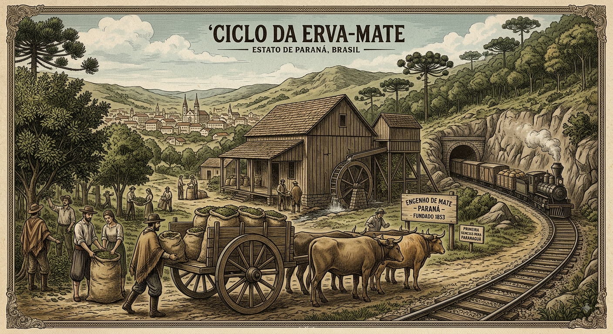

A IMPORTANCIA DA ERVA MATE DO PARANA
A história do Paraná se confunde com a da erva-mate, planta que era usada originalmente pelos povos indígenas Guaranis, Kaingangs e Xetás como bebida sagrada e medicinal. No século XIX, o consumo da erva cresceu tanto no Brasil e nos países vizinhos que os produtores locais — os chamados "Barões do Mate" — acumularam grande poder econômico. Foi essa riqueza que deu força política para a região se emancipar de São Paulo em 1853, dando origem ao estado do Paraná.

A história do Paraná se confunde com a da erva-mate, planta que era usada originalmente pelos povos indígenas Guaranis, Kaingangs e Xetás como bebida sagrada e medicinal. No século XIX, o consumo da erva cresceu tanto no Brasil e nos países vizinhos que os produtores locais — os chamados "Barões do Mate" — acumularam grande poder econômico. Foi essa riqueza que deu força política para a região se emancipar de São Paulo em 1853, dando origem ao estado do Paraná.

importancia cultural
A erva-mate é o verdadeiro DNA da identidade paranaense por unir as tradições indígenas, tropeiras e dos imigrantes europeus. O hábito de compartilhar o chimarrão ou o tererê consolidou um símbolo marcante de hospitalidade, igualdade e convivência comunitária no estado. Durante o movimento Paranista, a planta foi elevada a um ícone de orgulho regional e autonomia cultural. Essa força é tão profunda que o ramo de erva-mate está eternizado na bandeira e no brasão oficiais do Paraná. Hoje, a cultura ervateira permanece viva no cotidiano, na arquitetura histórica e no orgulho do povo paranaense.

curiosidades
curiosidade 1
A cidade paranaense de São Mateus do Sul possui o título oficial de Capital Nacional da Erva-Mate.